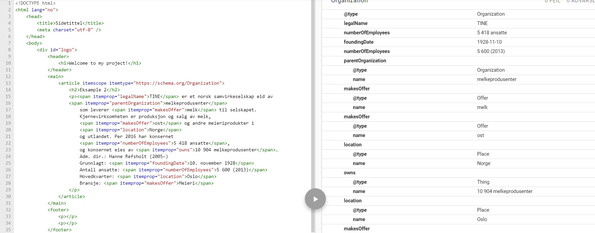

Eksample 2
TINE er et norsk samvirkeselskap eid av melkeprodusenter som leverer melk til selskapet. Kjernevirksomheten er produksjon og salg av melk, ost og andre meieriprodukter i Norge og utlandet. Per 2016 har konsernet 5 418 ansatte, og konsernet eies av 10 904 melkeprodusenter. Adm. dir.: Hanne Refsholt (2005–) Grunnlagt: 10. november 1928 Antall ansatte: 5 600 (2013) Hovedkvarter: Oslo Bransje: Meieri
